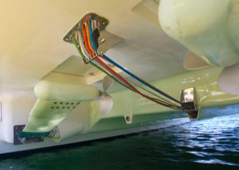
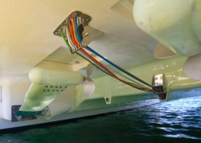
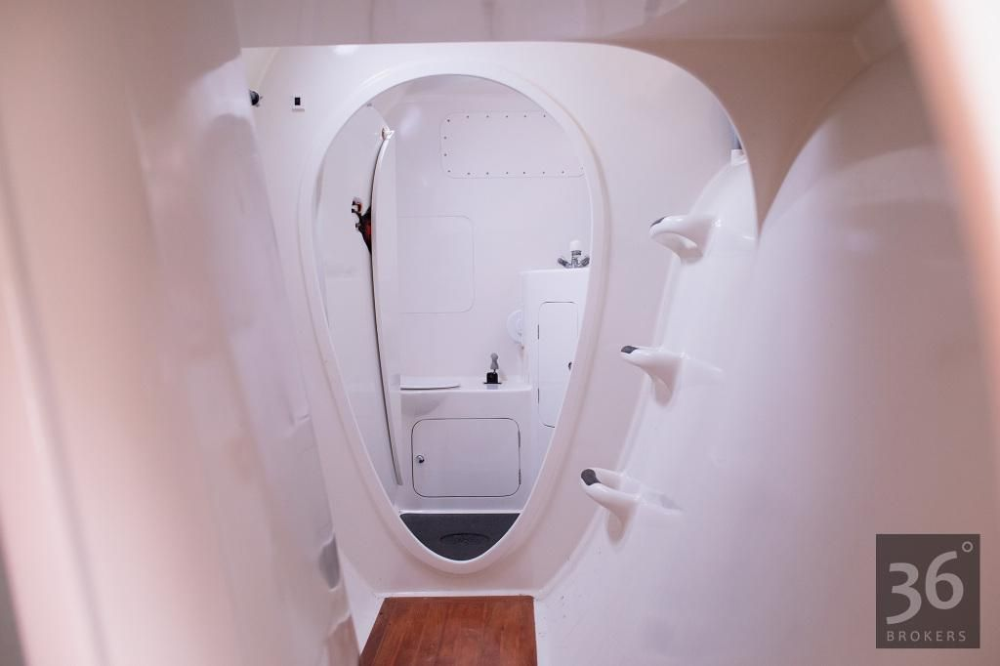
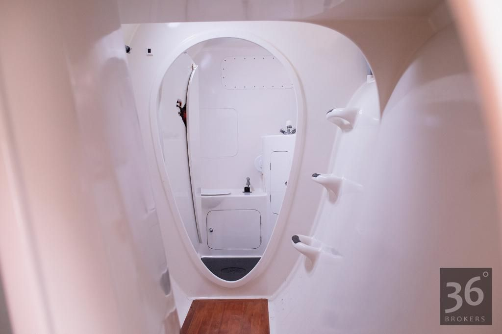

Inspirations
Vessels that have inspired Curious Cat to be what she is today.
Kawaakari (2013 Erik Lerouge 137)

An absolute stunner, this magnificent 45' vessel is a carbon kevlar daggerboard cat capable of sailing at 26 knots! Early in my research I was looking strictly for Erik Lerouge designs — that’s how much I like them.
Green eMotion (2010 African Cats GreenCat 445)
 

I was pleasantly surprised to discover this rare and special 43' catamaran. She was a bit out of my budget, but already electric, built out of best materials on the market, looking incredibly beautiful on the inside, and equipped with unique retractable propulsion system that can be lifted completely out of the water when not in use — as all propulsion systems on sailboats should be, in my humble opinion. Both bottom and top parts of this vessel are built as one piece (monocoque construction), which makes it stronger and lighter — a feature only Seawind and couple other makers are known for.
Blue Saga (2018 LUNA 47)
This is a high-end 47' sailing liveaboard catamaran that incorporates many interesting modern technologoies. Videos made by her owners served as great help in my research. All-electric propulsion, MacGlide environmentally-friendly antifouling sticker, flush port windows and hatches — those are the things that I imagined having on my dream boat.
Freedom (2017 Farrier F-39)
Built by krake catamarane KG using kevlar, carbon, and epoxy, that hull is a real beauty. The boat is extremely well equipped, a very fast daggerboard trimaran that can easily do 18 knots upwind. One of the only 39' Farrier trimarans ever produced! Although not a catamaran, this boat was the first vessel I fell in love with, and ended up getting very close to purchasing, but someone else got her instead. Then I started looking at catamarans.
Silent Yacht
These luxury electric power cats need no introduction. The main point of my interest in them is their massive photovoltaic system that theoretically allows infinite cruising range given enough sunlight. Achieving that is one of the main goals that Curious Cat has.
Siva (2012 Schionning Spirited 380)
Equally beautiful inside and out. I really like the clean tidy interior this 38' Australian daggerboard cat has. On one of the pictures I spotted a strange shiny thing on the wall, that was a compact wall-mounted washer/dryer by Daewoo. Now, thanks to wonders of capitalism, I have one just like that on my boat!
MAXI JAZZ (2010 Feral 50)

 

Custom-made one-of-a-kind composite 50' performance cruising catamaran built by Waikato Marine Composites in New Zealand. Designed by Nic Bailey. The construction is carbon fibre kevlar vacuumed hull with incredibly beautiful lines inside and out. Both the interior and body somehow remind me of a flying saucer. Painted with Atlex Elite Polyurethane, this is one of the vessels I look up to, a real masterpiece.